| Alfred Evert | 2006-10-30 |
05.02. Three Times Suction-Effect
Bubbles within Nothing
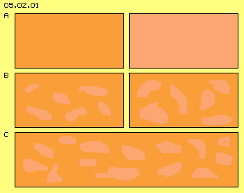
At this picture at C now the wall between both areas is taken off. Particles of previous dense area by majority now fall into areas less dense. In principle comes up a migration movement from high to less density. Short time later anywhere exists likely density - in general - while really still exist areas of most different presence of particles, in steady changing shapes.
Flows in Bundles
In addition I want to point out, these suction-areas not at all affect any ´attracting force´. They only allow some particles, occasionally pushed into that direction, to fly longer distances until next collision. As they fly off their previous position relative long, they can come back only some later. Meanwhile an other particle, again hit into likely direction, can follow at likely track, so momentary come up flows of likely directions.
Back-affecting Suction 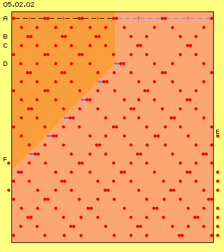
At the dense area left side the distances between collisions are assumed with two steps (black lines). At the area less dense, right side, these distances are three steps long (blue lines). At the beginning, six particles (red points) are positioned at the dense area (red) and only four particles at the area less dense (light red).
At first row A the starting situation is drawn. Each one particle is positioned at walls left and right side. Between, each two particles momentary collide (after four black steps left respective after six blue steps right). At second row the particles are drawn after each one step- resp. time-unit.
Starting from situation marked at A, the particles flow off each other resp. off the walls. They collide after two units (at row B) already within the dense area, however finally after three units (at row C) within the area less dense.
Particle left of the border between both areas (at row D) now can fly one unit further towards right side (marked by thick blue line) until colliding next time. After each two further steps, next particles at new border can move further towards right into the relative empty spaces. So it takes only short time, all particles move towards right side - resp. opposite, previous dense area becomes ´empty´.
At E, the first particle finally leaves the area observed. At F, a new particle comes from left side into the area observed. So it´s (realistic) assumed, areas of high and less densities reach far out towards left and right side. However already this local section and simple drawing clearly show, a ´suction area´ affects backwards into neighbouring area of higher density resp. low density wanders into area of higher density. Suction does not pull any particles towards itself - but a suction-area moves backwards into the area of more density - as this animation clearly shows.
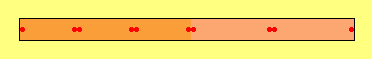
Emptiness of Gases
At picture 05.02.04 at A is sketched a box with some 50 cm long edges, containing glass balls at nine layers with each nine rows. These 729 balls are transparent (here marked blue) and only one is visible (here marked red). This is nearby rthe elation of water molecules in liquid shape (where all places of the box are occupied) to water steam (where the gas takes the whole volume of the box, however only one place is occupied).
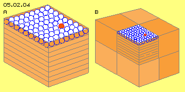
Spreading by pure chance most probably would result, within one box are placed two balls and at an other box even three balls. Same time thus three boxes (marked light red) will be totally empty. And again, most probable at least two empty boxes are positioned aside each other. Even within most wider volumes with corresponding much more occupied positions, inevitably are wide ´empty bubbles´ within.
If for example previous boxes are arranged by nine into all three dimensions (in total 729 boxes) and within that volume 729 balls are positioned totally by random, most exact would remain 243 boxes without any ball within (known as ´2/3-law´ of probability calculus, e.g. at Roulette). No matter how wide an area is assumed, by previous suction-effect particles of relative dense areas fall into areas of nearby now particles, not one by one but by large bundles of particles as common flows.
Order by Walls
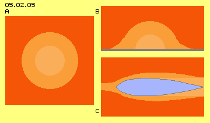
At this picture at C well known example of this effect is shown: a ´flow-conform´ shaped body (blue). This body can be stationary within a flow or can move through stationary fluid. At any case this body displaces fluid at its most wide diameter and further back comes up an area of relative less density (marked light).
This area is filled up and same time renewed again. The area of relative emptiness wanders through space (when body is moving) or wanders relative to the flow (if the body is stationary within the flow), so contrary to flight- or flow-direction. As mentioned upside, the area of low density (light red) spreads alongside the walls of the body, finally reaching far ahead of the ´nose´. Small resistance of flow-conform bodies is based on these effects, as in front of the body autonomously and steady comes up relative emptiness and alongside of the walls exists relative likely flow.
The suction area at the rear end does not affect by ´attraction´, however allows particles to fall into that area (by their molecular speed), not only at the end of the body but already much far in front within that area thinned off - a well known process. The speed of flows alongside walls is faster than further outside. Such differences of speeds produce special results - a second shape of suction-effect, discussed at the following.
Speed
The red line at A represents the molecular speed of air, somewhere in the region of 500 m/s respective 1.500 km/h. The length of the blue line at B represents the speed of sound with some 300 m/s resp. 1.000 km/h. The red zigzag-line shows, the sound won´t move straight ahead but wanders forward by ´deviations´.
A storm or hurricane are called wind-speeds which are only one tenth of, e.g. 30 m/s or 100 km/h (grey line at C). The particles of air move at tracks much longer, into diverse directions, much more all over the space than ahead. Even once more longer are the deviations at technical applications of gases, where the speeds mostly are some few m/s or km/h (black line at D).
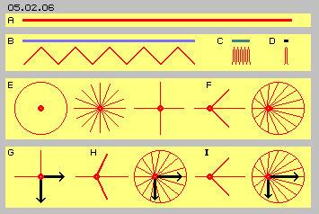
If now all particles and their molecular movements are overlaid by a general forward-movement (here from left to right side), corresponding figures at F are representative. By total view, the backward showing movements are shorter and the movements into direction of flow are longer. The movement into cross directions now show some ahead. All potential positions after a collision (at this circle) are shifted little bit ahead. Here however this shifting is overdrawn, would correspond to sound-fast hurricane (which only local might achieve the maximum speeds nearby 300 km/h).
Static / dynamic Pressure
The faster general movement ahead is, the more directions sideward are shifted to directions ahead and correspondingly static pressure becomes dynamic pressure. At this picture at I previous extreme fast movement is drawn once more with its very reduced static pressure and most strong dynamic pressure. These relations of pressures mainly are discussed and calculated by formula of fluid-sciences. However I am more interested in real movement processes and its representative motion pattern, e.g. if flows of different speeds run aside each other.
Diagonal Interactions
At C schematic are drawn four collisions (at the black points), which typically are resulting by previous diagonal movements at the border (grey line) between both flows. Like at any collision, both particles exchange directions and speeds. This corresponds to previous processes by normal conditions of resting gases or e.g. if gases are mixed. Here practically comes up a mixture of movement compounds of flows running by different speeds.
These four typical collisions at C occur as both particles move towards each other. At row below now are sketched four other meeting situations, where both particles move into likely directions. The particles schematic are drawn upside and downside of a theoretic border line, so no collisions really would occur. In reality however both movement-types are mixed up at a border area (by previous types of collisions), so these typical ways of involved particles really will cross mutually.
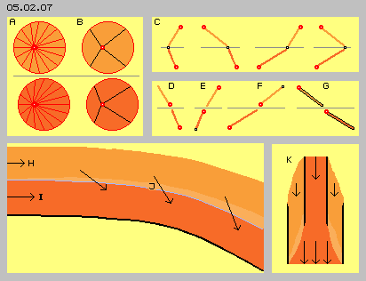
At E also both ways show backward, now however down towards the faster flow. Again the below way is shorter, so well could be ´rammed´ by the upside particle (at black point marked below). Practically occurs a ´rear-end collision´ and the particle of the faster flow is pushed back faster. Both particles still are falling against the general current, so resulting delay of fast flow resp. pushing it back-downward.
At F the opposite case is sketched, as both ways show forward-up. The below particle flies faster and will hit the upper particle rear-end. Both particles go on flying into these directions and thus the slow flow is accelerated ahead-upward resp. the faster flow extents into the slower flow.
After collisions more or less frontal, the particles fly still at ´chaotic´ ways. Here however, at these collisions by similar directions with these rear-end collisions, the particles still fly nearby each other and commonly into likely directions. So besides areas of total mix-up with motions cross and fro, inevitably come up areas with real crowds of particles flying in shape of dense flows well ordered.
Without or delayed Return
Within fast flow, backward showing movements are more rare, less collisions occur and particles are less thrown back. So the new particle will never come back into the slow flow or only with some delay. This particle becomes missing as partner for collisions at its original area. A next particle of the slow flow, randomly hit into likely direction, can follow unhindered the way of previous particle or at least the position of next collision is shifted some ahead-downside.
These movements correspond in total to the processes of suction areas (like discussed upside at picture 05.02.02). Also within faster flows naturally exist previous ´bubbles of relative emptiness´ (like discussed at picture 05.02.01), into which crowds of particles fall at likely tracks. These ´new´ particles hit rarely frontal towards ´old´ particles and thus are rarely pushed back against the general flow. Much more collisions there occur ´rear-end´, so many particles fly nearby next into common direction ahead.
Bending towards faster Flow
A faster flow affects like suction towards a neighbouring slower flow. However, there are no particles ´pulled in´, but ´voluntary´ only these particles enter the fast flow, when they are pushed randomly into fitting directions. However, not only that bending comes up, but also previous existing ´empty bubbles´ are filled up (and that flow now really shows higher density). New particles fly with molecular speed into the gaps, diagonal ahead, so that speed becomes a part of the existing (average) speed of the fast flow. All particles all times fly by molecular speed, now however more particles fly in better order ahead, so the flow indeed becomes accelerated.
A faster flow thus affects like suction, integrates neighbouring particles, into direction diagonal-ahead, the density increases, the flow becomes a better structure and is accelerated. These processes can work at its best if flows run alongside a bended wall (here marked as black curve).
Water-Jet-Pump
At these processes occurs no energy-transformation (and thus all considerations concerning energy-constant are totally irrelevant). The only process is, the vectors of molecular movements are structured into likely directions, naturally never completely, but only to some higher level of order is ´organized´. Also that ´organizing-work´ mostly needs few efforts or even null energy - e.g. because every bended wall already will do.
Driving Hurricanes
As common sciences allow no possibilities for Perpetuum Mobile nor ´self-acceleration´, the obvious acceleration of the rotating vortex is explained by transformation of heat- into kinetic-energy. Some other explanations state, the static pressure of environment is transformed into the dynamic energy of flow. This might be right in general, at the other hand sciences knows well, different pressures immediately are balanced (like described upside at picture 05.02.01) and the process is finished when pressures got equal. So that continuous acceleration is not to explain only by these common ideas.
The real process exclusively is based on the ´suction-effect´ of the faster flow onto slower movements of the environment, like describes upside at picture 05.02.07. By pure chance, some particles of the environment with fitting vectors fall into the faster flow without resistance, leaving ´emptiness´ at their place of origin, so a continuous process comes up. There occurs only a steady selection of movement vectors. Within the ordered flow more particles can move rather dense into the common direction. The integration of the new particles increases the speed and density of the general flow.
One must be conscious about these relations: the air weights just nothing, however it becomes ´remarkable´ when moving by hurricane speeds. The movements of particles by themselves however are ten times faster. Even resting air is full of energy, however without ´external effect´. If however only small parts of othe riginally chaotic movements are ´ordered likely´, an enormous force with ´external affect´ results - without any change concerning the molecular speed (thus without any ´heat´ being involved).
Motion and Pressure 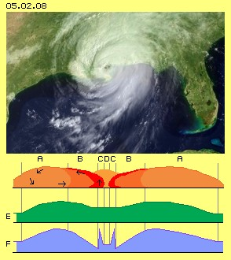
The vortex system reaches far out much wider (A, marked light red), where the air moves outward and down, so clear and nice weather exists. Alongside the ground, the air masses move back to centre, by increasing tangential directions.
At E schematic is shown the air-pressure at half level of the whirlwind (green graph). This atmospheric pressure corresponds nearby to the weight of remaining air masses upside. Where the air is piled up to most hight (between B and A), also the most high pressure is measured.
Totally other results show the measures of pressure near the ground, like marked schematic at F (blue graph). At the outer area (A) the pressure increases towards inside, corresponding to downward-movement of air masses there. Further inward (B) the pressure decreases continuously, because there the winds run increasing faster towards the centre (the static pressure is reduced and corresponding dynamic pressure of flow increases).
Pressure and Density
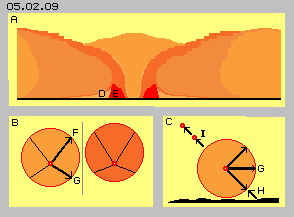
Winds never are total steady flows but a compound of single gusts, where the air locally shows most different density and speed. That´s the macroscopic appearance corresponding to previous discussed ´empty bubbles´ resp. crowd-wise motions of particles of gases. Into these ´bubbles´ fall gusts, fill up previous areas of low density, the air masses collide and are rejected into other directions.
Within free space, gusts can fall into such empty rooms from all sides. Each gust leaves free space behind, into which next gust will fall again. If however a gust of wind hits onto the ground, the air is rejected upward - but no other air masses follow from the ground, so again relative empty areas (D) remain. These suction areas near the ground mainly are filled up only from outer areas of the whirlwind. That´s why most heavy storms are running along the ground into radial resp. lastly in tangential directions.
Order by Walls
At this picture at B schematic movement-types of previous picture 05.02.07 are shown once more, by view top-down at the flow. Left of the theoretic border (grey line) is drawn a particle of a slow flow (light red) and right side a particle of a faster flow (dark red). The motion forward-inward (F) of the ´slow´ particle in principle affects the acceleration of the faster flow. The motion into direction back-inward (G) pushes together the faster flow, thus increases its density.
At this picture at C is shown a vertical sectional view through the flow, where one particle is positioned near the ground (black). Previous pressure (G) into direction towards the centre, naturally affects not only in horizontal direction, but also diagonal some upward resp. downward (marked by arrows). The downward showing movements are rejected by the uneven ground, so this particle later on flies upward-outward (marked by arrow H). At this area now most ´empty bubbles´ are filled up, so this backward motion will produce collisions (I) by high frequencies. That´s why the radial-inward motions are stopped, building up the border towards the inner eye.
Again one should be conscious, even at these enormous fast winds of that region, the particles move nine steps cross and to and fro and up and down - before coming ahead one step into the general direction of flow. Within these confusing movements, the centripetal motions are stopped and lots of particles whirr around nearby each other. That´s measured as the exorbitant high pressure at that small ring outside of the eye. That pressure can only un-stress if the particles escape upwards. These particle masses of high density really ´explode´ straigth up.
Tornado 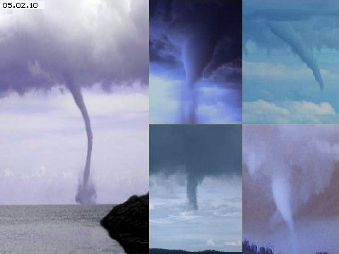
The counterparts of hurricanes are tornados, five examples of are shown at picture 05.02.10. The tornado left side is build out in total, its ´hose respective its trunk´ reaches from the thundercloud down to the water surface. Naturally that hose is only the visible part of the vortex and around it, also the air is moving into centripetal like tangential directions.
At the other hand, whirlwind-hoses can show diameters of only some meters, however can be long by kilometers. At downside end of the trunk come up enormous forces, strong enough to lift even heavy parts hundreds of meters up and away. Here for example, the trunk ´sucks´ water upward. Also clear to observe is previous ´explosion´ near and some upside of the water surface. Thus as long as no ´wall´ involves the vortex system, no barrier comes up but a compact vortex exists practically without any eye. Only at the ground resp. the water surface, the dense air of that area scatters into all directions.
Opposite to hurricanes, the tornados start by local turning motions within thunderclouds. Afterwards they grow down from the cloud, like pictures right side show most impressive. Water steam, heat differences and corresponding turbulences within thundercloud well are the trigger for these appearances. At the other hand, such tornados are build out spontaneous also from ´dry´ air movements. The growing and self-acceleration of these vortex systems again is based exclusively on ´suction of fast flows´.
Suction in Slices 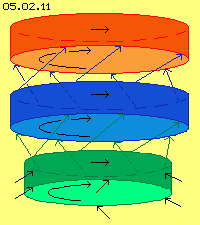
At picture 05.02.11 that starting rotation schematic is shown as a turning red disk. The air below is sketched as a blue disk. That second disk could rest at the beginning, nevertheless particles by pure chance could ´escape´ diagonal upward into the turning red disk (marked by blue arrows). The following process is totally analogue to the process described by previous flows of different speeds. Into the new turning layer of air (blue disk), again air below is ´sucked in´, all times upward and in turning sense (marked by green disk and arrows).
Towards the growing hose now also the air aside affects with its static pressure, thus compressing the hose radial and same time accelerating diagonal (see black arrows). This schematic drawing explains theoretic that growing and self-acceleration of the vortex-pattern, previous pictures demonstrate obviously the real movements like the development of system.
In principle just the same effect affects like described upsides as ´suction of fast flow´. Here however these ´flow-strings´ of different speeds are arranged downside of each other. These flow-strings are closed rings resp. based on general upward-movement, spiral tracks are moving upward. So these tornados are rather similar to previous hurricanes, however they show some special properties - and that´s why I call these vortex-systems the ´third kind of suction-effect´.
Continuous acceleration with lastly enormous forces are the result of the fact, differences of speeds exist within the whole volume of vortex system, from each tiny flow-string to neighbouring string. Anywhere the particles fall randomly into directions, from which they never come back or come back only with delay, so anywhere the molecular movements of fitting vectors become a part of the general flow. There is no ´external accelerating force´, but the self-acceleration comes from the total volume of the vortex system. These self-organizing systems grow and ´live´ from their inner structure (as long as not influenced from outside and the system lastly collapses).
One last time: there are no energy transformations involved like at common technologies (and which thus are bound to energy-constant). No energy-surplus is achieved (however these ordered flows well are used by some techniques and could be used much better). The only process is, the vectors of given movements are ordered some more likely. These actions occur autonomous - because not all collisions produce movements spread equal into all directions, but at these flow-systems many collisions occur in similar directions and thus are less ´harmful´ for general flow.
At previous chapter was discussed how gases can be merged. Now shall be discussed how gases of different density mix up. At picture 05.02.01 at A an area of relative high density (red) is shown left side, and right side an area (of same gas) with less density (light red) is drawn.
Naturally this process of balancing densities - and thus also of pressures - between two areas is well known and calculable by formula. However I want to point out, that balance-process occurs not only at the borderline, not only by single atoms there, but all times real ´bundles´ of particles fall into ´empty spaces´ by relative close configurations.
At previous picture with its motions only in horizontal directions, collision occur only by given rhythm, also because starting with schematic spread and equally positioned particles. I want to show once more an example which demonstrates the emptiness of gases and inevitably existing ´bubbles of nothing´.
At picture 05.02.05 at A schematic is shown an area of low density (light red) and surrounding area of high density (dark red). The particles fall into the relative empty area, by parts also through that area. Opposite, the area of low density expands radial.
The speed of sound is common for us, e.g. when counting the seconds between flash and thunder, calculating three seconds per kilometer. The particles of air however move much faster, need only two seconds per kilometer. At picture 05.02.06 diverse speeds are shown schematic.
At this picture at E a resting particle (red point) is drawn. After a collision and after one time-unit it will be positioned somewhere at the circle sketched. Aside of, some of the possible radial tracks are drawn. At previous considerations were observed only the movements showing into horizontal and vertical directions.
At this picture at G schematic is sketched (by black arrows), at ´resting´ gases exists the ´static´ pressure likely towards all sides (e.g. measured when particles are rejected at the face of a pressure-sensor). At H is sketched a particle generally moving towards right side, so the sideward motions no longer hit right angles at wall, so cross to the general flow-direction, now exists only a reduced ´static pressure´. Corresponding stronger is the ´dynamic pressure´ into flow-direction (marked by arrows of different lengths at H).
At picture 05.02.07 at A previous schematic figures of potential movement directions are shown once more, upside of a slow flow (light red) and below of a fast flow (dark red). At previous discussions, horizontal and vertical movements were taken as representative for the processes. Likely representative are motions into diagonal directions (thus each showing 45 degree to horizontal or vertical directions). If the molecular movements are overlaid by a general flow, these diagonal lines are shifted correspondingly forward, like sketched at B, again for the slow (upside) and the fast flow (below). These particles with these potential tracks of motion thus are representative as movement-types resp. -pattern for flows of different speeds. So these potential ways are representative for ´average´ movements of both flows.
At D both ways show back-upward, so counter the general flow direction, and towards the slower flow. The below way is shorter, so the particle of the fast flow most will run only behind the particle of the slow flow, without compelling collision. At the other hand, both particles fly ´against the current´ and thus they are soon pushed ahead, both again into likely directions.
Decisive effect between neighbouring flows of different speeds however is the movement pattern shown at G (marked by black lines). Both particles fly ahead-downward, so into general direction and towards the faster flow. The upside particle moves slower than the downside particle, won´t catch up but will fly further on behind. Thus a new particle is integrated into the faster flow, without any resistance.
That´s the reason and process of well known effect: neighbouring ´strings of flows´ all times are bended towards the faster flow. At picture 05.02.07 is sketched a slow flow (H) besides a faster flow (I) and diagonal arrows mark the way of previous diagonal movements. These ´new´ parts leave an ´emptiness´ behind, here marked as light area (J).
Analogue respective based on these effects, functions any water-jet-pump, like schematic shown at picture 05.02.07 at K and which works naturally also with a gaseous medium. The pump-performance comes up without corresponding input of energy, because the pump must not ´pull and drag´ particles inside, not possible at all when pumping gases. These pumps really are a ´perpetuum mobile´ that kind, an energetic higher level (increased throughput) is achieved without ´energy-consumption´.
Previous ´motion-types´ at the border of flows with different speeds are theoretic movement-pattern, useful for explaning the ´incredible´ suction-effects and autonomous self-acceleration - as really every whirlwind obviously demonstrates. The starting affect of tropic whirlwinds is the evaporation of water (contradicting the laws of thermodynamics, as potential-differences come up autonomously, reducing the entropy). The water steam is more light than the air, so lift results (an interesting effect because autonomously comes up a force with vector contrary to the vector of the original gravity force). The starting affect of the whirlwind-rotation is the turning of the earth resp. the ´Coriolis-Force´ (which is no independent force, but only an effect of inertia).
Phenomenal is the sudden rise of the static pressure at the area of lift (C), however only downside near the ground. Towards upside and towards the centre, the pressure decreases again to much lower level. This area of exorbitant pressure however is no ´atmospheric pressure´ (weight of air masses plus / minus lifting / falling movements of air) like at ´normal´ low- or high-pressure areas, but it´s a result of the high density at this ring-shaped area.
Actually one should expect, the radial flow-component should reach totally into the centre and should not stop already at the border of the eye. Most explorers reason, the rotating air masses move outward based on centrifugal force (lastly inertia) respective are no longer compressible (however centrifugal forces would affect already quite outside against any centripetal motion). The particles of air fly chaotic and all times straight on, only until next collision. The air as a whole, all times is moving into that direction, where the particles can fly most long distances without ´harmful´ collisions (against general flow direction). Inertia is only involved as the particles move straight ahead and by constant speed. Inertia of air masses in total - does not exist (and that´s really true).
05.03. Potential-Twist-Pipe
Fluid-Technology - Basics